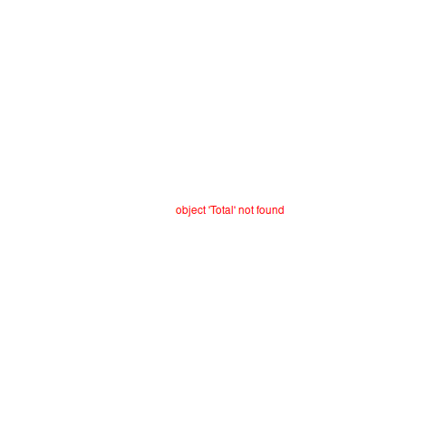
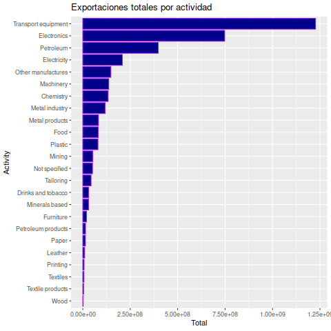
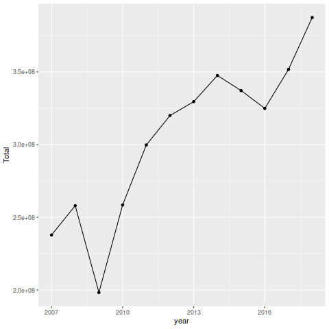
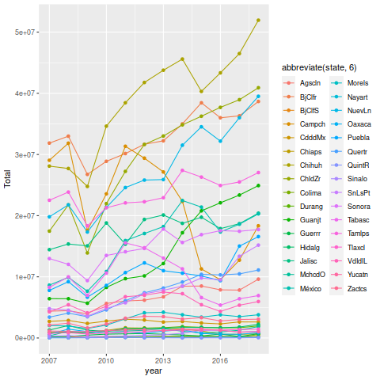
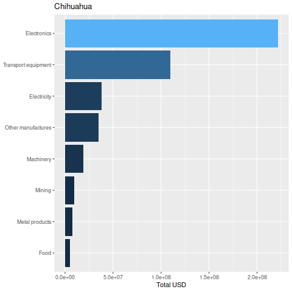
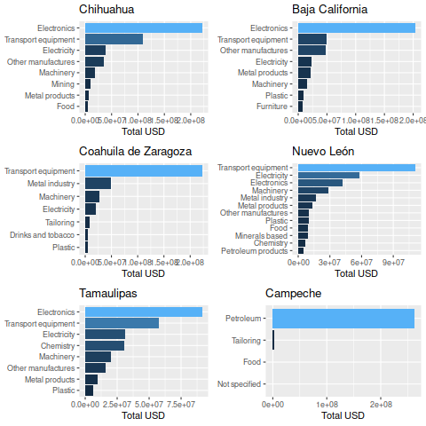
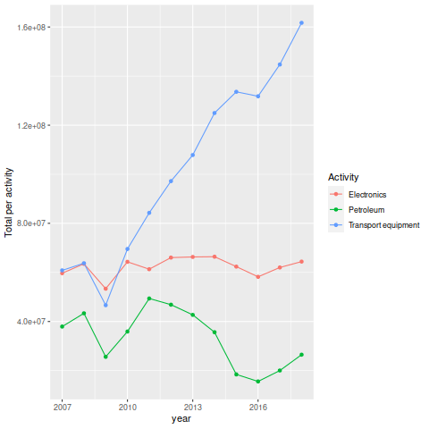
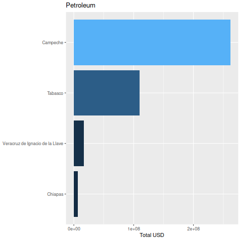
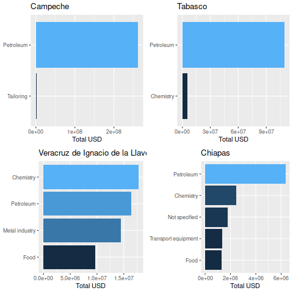

EDA de exportaciones totales de México en R con tidyverse
Table of Contents
Introducción
El análisis exploratorio de datos (EDA en inglés, Exploratory Data Analysis) es una de las herramientas más útiles en varias áreas de análisis de datos. El concepto de EDA ha sido utilizado popularmente en los últimos años para referirse a los procesos de exploración primaria de un grupo de datos. Por lo tanto, no existe una fórmula o receta para realizar una exploración, sea general o exhaustiva. Una exploración correcta depende de tus habilidades tanto para entender los datos como para utilizar las herramientas adecuadas. Este tutorial no pretende ser una explicación detallada de como realizar un EDA, si no mas bien un ejemplo específico.
La información que presento aquí son los resultados del primer EDA que realicé cuando decidí cambiar mi carrera hacía el análisis de datos. Es una serie de datos obtenidos del Instituto Nacional de Geografía e Informática de México, contiene información sobre la cantidad en miles de dolares de las exportación por año de cada estado. Me pareció un ejemplo adecuado ya que yo no tengo mucho conocimiento en economía o exportación, por lo tanto este ejemplo no contiene ningún análisis numérico detallado o complicado, si no mas bien una exploración general de los datos obtenidos. Los datos han sido tomados de la pagina oficial de INEGI en formato de excel. Aquí presento una versión que yo mismo he arreglado para su uso en R, los cuales pueden ser descargados en formato CSV desde mi repositorio de github INEGI-export.
El proceso de EDA resulta útil no sólo para profesionales analistas de datos, si no en un amplio rango de actividades para conocer y entender los datos que se manejan. En muchos casos los análisis de datos incluyen complicadas fórmula matemáticas en grandes serie numéricas que no son entendidas, simplemente procesadas y reducidas a pequeños números que representan algo, como medias, rangos, estadísticos, etc. El análisis exploratorio de datos nos permite entender un poco mas que significan esos número, de donde vienen, y que se puede extraer de ellos. Los datos son siempre generados en base a la información, el EDA es una herramienta para entender esa información.
Análisis exploratorio (Exploratory Data Analysis, EDA)
Vamos a comenzar llamando directamente las librerías o módulos
(en R library) que necesitamos para hacer nuestro análisis, y
leyendo los archivos CSV en la memoria de R. Esto puede ser
realizado conforme se va utilizando, sin embargo es recomendable
importar todas las librerías y archivos al inicio de nuestro código
o script, para evitar errores o problemas de organización.
library(tidyverse) library(cowplot) export.rows <- read_csv("../exportations_activity_rows.csv") export.cols <- read_csv("../exportations_activity_cols.csv")
Las librerías son básicamente programas escritos en R que contienen
el código necesario para realizar ciertas funciones, especificas
de cada librería. En español son popularmente conocidas como
paquetes o módulos. En este caso vamos a utilizar tidyverse y
cowplot, el último nos ayuda a colocar varias gráficas de forma
fácil y ordenada.
La librería tidyverse ofrece enormes ventajas (aunque también
pocas desventajas) para el análisis de datos. Al llamar esta
librería incluye una serie de librerías que contienen diferentes
tipos de herramientas para facilitar y organizar el análisis de
datos. En este tutorial vamos a utilizar principalmente:
ggplot2Que facilita la creación de gráficas con el sistema de capas (The Language of Graphics escrito por Leland Wilkinson, 2000)dplyrque nos ayuda a mandar resultados de un proceso al siguiente utilizando los famosos%>%tibbleque facilita la manipulación de tablas, transformando los tradicionalesdata.framede R a un formato mas amigable visualmente.
Entre otras desventajas de estos paquetes es que no funcionan
muy bien cuando la cantidad de datos es muy grande (miles o
millones de filas), en cuyo caso se recomiendan otras herramientas
como Data Table que funciona de formas mas similar al tradicional
data.frame de R. Más información sobre tidyverse puede ser
encontrada en su página oficial,
https://www.tidyverse.org/, o en el e-book R for data science
escrito por uno de los creadores de la librería. Un buen libro en
español es R para profesionales de los datos.
Este análisis lo realicé primordialmente en inglés, por lo tanto he decidido mantener el código en inglés por facilidad para mi por un lado, pero también por el beneficio de ser mas amigable con R en general, y de generar nombres mas cortos. Así pues, algunos valores se mantendrán en español y otros han sido traducidos para la manipulación de los datos.
El siguiente bloque contiene la traducción de las actividades de exportación, para generar nombres en inglés mas accesibles. Lo primero fue guardar los nombres en español en un vector, para utilizarlos más tarde en la traducción; también generamos un vector del mismo tamaño, con su equivalente en Inglés (en el mismo orden).
## Nombres en español en un vector colnames(export.cols) categorias <- colnames(export.cols)[3:27] ## Equivalentes en inglés activities.en <- c("Total", "Food", "Drinks and tobacco", "Textiles", "Textile products", "Tailoring", "Paper", "Chemistry", "Plastic", "Minerals based", "Metal industry", "Metal products", "Machinery", "Electronics", "Transport equipment", "Furniture", "Other manufactures", "Not specified", "Mining", "Leather", "Wood", "Printing", "Electricity", "Petroleum", "Petroleum products")
Para cambiar los nombres de las columnas, podemos hacerlo
directamente con la función colnames, seleccionando la posición
de los valores que queremos cambiar (en este caso, 3 al 27) y
colocando ahí los nuevos valores en inglés.
## Cambio de nombres colnames(export.cols)[3:27] <- activities.en
Para cambiar los valores en export.rows vamos a necesitar la
conversión de las expresiones en español a las mismas en inglés.
Aquí he utilizado herramientas de programación basada en funciones
(Functional Programing en inglés) para generar: primero la función
principal para traducir translate. Aquí le estoy diciendo a
translate exactamente lo que necesito hacer, sin preocuparme si
R puede hacerlo o no. Por ejemplo, utilizo la función equivalent,
que no existe en R, pero que, basado en mis expectaciones, debe
buscar el equivalente en inglés de la frase en español. Así pues,
basado en trasnalte, vamos llenando los huecos, creando la
función equivalent que haga exactamente lo que necesito.
translate <- function(vector.es){ vector.en <- c() for (i in 1:length(vector.es)){ expression.es <- vector.es[i] expression.en <- equivalent(expression.es) ## "equivalent" toma expression.es y regresa el ## equivalente en ingles vector.en <- append(vector.en, expression.en) } vector.en } equivalent <- function(expression.es){ position <- match(expression.es, categorias) expression.en <- activities.en[position] expression.en } ## Probando nuestra nueva función equivalent("Impresión e industrias conexas")
[1] "Printing"
Como podemos ver, equivalent toma la expresión de nuestro vector
en español, y arroja el equivalente que le hemos elegido en inglés.
translate(categorias)
[1] "Total" "Food" "Drinks and tobacco" [4] "Textiles" "Textile products" "Tailoring" [7] "Paper" "Chemistry" "Plastic" [10] "Minerals based" "Metal industry" "Metal products" [13] "Machinery" "Electronics" "Transport equipment" [16] "Furniture" "Other manufactures" "Not specified" [19] "Mining" "Leather" "Wood" [22] "Printing" "Electricity" "Petroleum" [25] "Petroleum products"
translate toma todos los elementos en el vector, y nos arroja sus
equivalentes en inglés. Así pues, para transformar todos los
valores en la columna Descripción a su equivalente en inglés he
decidido generar una nueva columna, utilizando mi función
translate. Esto es muy fácil utilizando mutate
(export.rows <- mutate(export.rows, Activity = translate(`Descripción`)))
# A tibble: 5,255 x 6
Código Descripción state year USD Activity
<dbl> <chr> <chr> <dbl> <dbl> <chr>
1 NA Exportaciones totales Aguascalientes 2007 4389841 Total
2 NA Exportaciones totales Aguascalientes 2008 4456893 Total
3 NA Exportaciones totales Aguascalientes 2009 3951108 Total
4 NA Exportaciones totales Aguascalientes 2010 5647929 Total
5 NA Exportaciones totales Aguascalientes 2011 6051640 Total
6 NA Exportaciones totales Aguascalientes 2012 6183782 Total
7 NA Exportaciones totales Aguascalientes 2013 6726207 Total
8 NA Exportaciones totales Aguascalientes 2014 8466007 Total
9 NA Exportaciones totales Aguascalientes 2015 8495445 Total
10 NA Exportaciones totales Aguascalientes 2016 7870962 Total
# … with 5,245 more rows
Ahora para empezar formalmente nuestro EDA, vamos a darle un vistazo
a los totales por estado, utilizando nuestra tabla export.cols.
Aquí utilizamos los famosos pipe %>% que mandan los resultados
de un proceso, al siguiente proceso, por ejemplo, si queremos ver
los totales por estado, podemos pedirle a R que haga lo siguiente
toma la tabla export.cols %>% agrupa los datos por estado (state) %>% calcula la sumatoria del total, nómbrala total export %>% organiza en forma descendente basado en total export %>% muestra en pantalla todo (n = Inf)
La versión en R utilizando el paquete dplyr es:
export.cols %>% group_by(state) %>% summarise(`total export` = sum(Total)) %>% arrange(desc(`total export`)) %>% print(n = Inf)
# A tibble: 32 x 2 state `total export` <chr> <dbl> 1 Chihuahua 466861927 2 Baja California 398935507 3 Coahuila de Zaragoza 355638907 4 Nuevo León 330267052 5 Tamaulipas 284435973 6 Campeche 264100465 7 Jalisco 213931233 8 México 188357470 9 Sonora 179661021 10 Guanajuato 167191962 11 Puebla 127934390 12 Tabasco 115797563 13 San Luis Potosí 94812554 14 Querétaro 88633615 15 Aguascalientes 79688240 16 Veracruz de Ignacio de la Llave 68556313 17 Morelos 37397175 18 Zacatecas 34010223 19 Ciudad de México 32037661 20 Hidalgo 19504479 21 Durango 17431796 22 Yucatán 14496875 23 Michoacán de Ocampo 13411397 24 Chiapas 13291536 25 Tlaxcala 12987607 26 Oaxaca 11023551 27 Sinaloa 7825439 28 Guerrero 5918438 29 Colima 2518028 30 Baja California Sur 2303491 31 Nayarit 1146388 32 Quinta Roo 517674
Gracias a la agrupación de tidyverse, podemos utilizar estas
herramientas con muchas otras funciones, entre otras, podemos
mandar resultados a un gráfico ggplot
## Visualización export.cols %>% group_by(state) %>% summarise(`total export` = sum(Total)) %>% ggplot() + geom_bar(aes(y = `total export`, x = reorder(state, `total export`, FUN = abs), fill = `total export`), stat = 'identity') + coord_flip()

En el bloque anterior comenzamos con algo similar, y mandamos los
resultados a ggplot(), así que ya no es necesario especificar
dentro de la función ggplot de donde tomar los datos, por lo
tanto se queda vacía. geom_bar genera un gráfico de barras,
que de forma típica toma los valores numéricos en el eje Y y los
valores categóricos en el eje X. Esto lo especificamos dentro de
la función aes (por "aestetics", o estética). Otra de las ventajas es que podemos llamar funciones dentro de funciones de gráficos
ggplot, por ejemplo, en x utilizo la función reorder para
ordenar los resultados por los valores de total export, basado
en el valor absoluto (FUN = abs). También, dentro de aes he
declarado fill = `total export` para que llene las barras en base
a los valores de total export. Es importante no confundir fill
con color, el cual cambia simplemente los contornos de las
barras. También es importante especificar fill dentro de aes
cuando queremos darle un valor basado en nuestros datos; o bien,
se puede colocar fuera de aes para darle un valor constante.
stat = 'identity' y coord_flip() nos ayudan a ordenar las
barras, y cambiar el eje de las Y por X, respectivamente.
Ahora podemos hacer lo mismo pero por categoría,
usando nuestra otra tabla export.rows
export.rows %>% filter(Activity != "Total") %>% group_by(Activity) %>% summarise(Total = sum(USD)) %>% arrange(desc(Total)) %>% print(n = Inf)
# A tibble: 24 x 2 Activity Total <chr> <dbl> 1 Transport equipment 1226859499 2 Electronics 747959073 3 Petroleum 397933968 4 Electricity 208582754 5 Other manufactures 147915402 6 Machinery 136957553 7 Chemistry 133570853 8 Metal industry 117915995 9 Metal products 82889135 10 Food 81653585 11 Plastic 80126816 12 Mining 52953993 13 Not specified 51470567 14 Tailoring 43913959 15 Drinks and tobacco 31059501 16 Minerals based 30584505 17 Furniture 19883596 18 Petroleum products 14565067 19 Paper 13876523 20 Leather 9863853 21 Printing 6915538 22 Textiles 6260722 23 Textile products 4954252 24 Wood 1959275
Para variar un poco y hacerlo mas didáctico, vamos a cambiar algunos detalles, manteniéndolo simple:
- Vamos a colocar
fillafuera deaes - Vamos a cambiar el valor de
colorpara observar la diferencia - Vamos a renombrar el eje de las X
- Vamos a darle un título
export.rows %>% filter(Activity != "Total") %>% group_by(Activity) %>% summarise(Total = sum(USD)) %>% ggplot() + geom_bar(aes(y = Total, x = reorder(Activity, Total, FUN = abs)), fill = "darkblue", color = "purple", stat = 'identity') + labs(title = "Exportaciones totales por actividad", x = "Activity") + coord_flip()

Ahora de manera fácil e intuitiva podemos observar que cambios en el código fueron responsables de que cambios en el gráfico.
Por último, podemos hacer algo similar con las exportaciones totales por año.
export.cols %>% group_by(year) %>% summarise(`total export` = sum(Total)) %>% print(n = Inf)
# A tibble: 12 x 2
year `total export`
<dbl> <dbl>
1 2007 237809741
2 2008 257967777
3 2009 198234125
4 2010 258504747
5 2011 299732519
6 2012 320014188
7 2013 329562705
8 2014 347559680
9 2015 337170197
10 2016 324901419
11 2017 351726063
12 2018 387442789
Ahora en lugar de hacer un gráfico de barras, vamos a hacer líneas
y puntos. Vamos a cambiar otro detalle: en lugar de especificar
aes dentro del geometric, que en este caso tendrías que ir dos
veces exactamente lo mismo, dentro de geom_line y geom_point,
podemos especificarlo dentro de la función principal del gráfico
ggplot(), de esta forma los valores que especifiquemos ahí serán
tomados como los valores principales, y no necesitamos darle mas
detalles a geom_line ni geom_point.
## Visualization export.rows %>% filter(Activity == "Total") %>% group_by(year) %>% summarise(Total = sum(USD)) %>% ggplot(aes(x = year, y = Total)) + geom_line() + geom_point()

Podemos hacer lo mismo por estado. Aquí, debido a la complejidad de
los nombres de algunos estados, he decidido abreviar los nombres
de cada estado a sólo 6 letras, usando la función abbreviate
## Por estado export.rows %>% filter(Activity == "Total") %>% group_by(year, state) %>% summarise(Total = sum(USD)) %>% ggplot(aes(x = year, y = Total)) + geom_line(aes(colour = abbreviate(state, 6)))+ geom_point(aes(colour = abbreviate(state, 6)))

Gracias a abbreviate los nombres de los estados se pueden
entender, sin embargo, a pesar de los colores y el texto, es
difícil apreciar propiamente 32 líneas.
Por otro lado nos gustaría ver si cada año fue el mismo estado o la misma actividad produciendo la mayor cantidad de dolares en exportaciones, o si esto cambió con el tiempo. Debido a la complejidad de nuestro gráfico anterior, necesitamos un acercamiento diferente:
## Principal estado en cada año export.cols %>% group_by(year) %>% filter(Total == max(Total)) %>% select(year, state, Total) %>% arrange(year)
# A tibble: 12 x 3
# Groups: year [12]
year state Total
<dbl> <chr> <dbl>
1 2007 Baja California 31858677
2 2008 Baja California 32988913
3 2009 Baja California 26741828
4 2010 Chihuahua 34633881
5 2011 Chihuahua 38446014
6 2012 Chihuahua 41764861
7 2013 Chihuahua 43770979
8 2014 Chihuahua 45594451
9 2015 Chihuahua 40302945
10 2016 Chihuahua 43342067
11 2017 Chihuahua 46491551
12 2018 Chihuahua 51944047
## Activity export.rows %>% filter(Activity != "Total") %>% group_by(year) %>% filter(USD == max(USD)) %>% arrange(year) %>% select(Activity, state, year)
# A tibble: 12 x 3 # Groups: year [12] Activity state year <chr> <chr> <dbl> 1 Petroleum Campeche 2007 2 Petroleum Campeche 2008 3 Petroleum Campeche 2009 4 Petroleum Campeche 2010 5 Petroleum Campeche 2011 6 Petroleum Campeche 2012 7 Petroleum Campeche 2013 8 Transport equipment Coahuila de Zaragoza 2014 9 Transport equipment Coahuila de Zaragoza 2015 10 Transport equipment Coahuila de Zaragoza 2016 11 Transport equipment Coahuila de Zaragoza 2017 12 Transport equipment Coahuila de Zaragoza 2018
Los resultados son interesantes: el principal exportador hasta 2009 es Baja California, y después Chihuahua. Sin embargo, si observamos las principales actividades exportadores, tenemos en primer lugar a Campeche hasta 2013 y después es Coahuila. Parece ser que ciertas actividades no tienen mucha diferencia en la cantidad de ingresos entre ellas, y por eso ciertas combinaciones resultan en mayor nivel de exportación para ciertos estados. Por ejemplo, Capeche es el principal exportador de Petroleo, y se mantiene en primer lugar cuando ordenamos por actividad, sin embargo pasa al sexto lugar cuando ordenamos por estado.
Sería interesante cambiar la manera de analizar los datos y observar los principales exportadores junto con las principales actividades.
Visualizaciones interactivas utilizando funciones
En el área de análisis de datos, el uso de funciones resulta útil
en varios casos. Como vimos anteriormente, nuestra función
translate nos ayudó a aplicarla en cada elemento de un vector
(en este caso, una columna). Este procesos de aplicar una función
en todos los elementos de una lista se conoce tradicionalmente en
el albur de programación como "map". Otra uso importante de
funciones personalizadas es para hacer más eficiente el análisis,
por ejemplo cuando necesitamos repetir un proceso mas de una vez.
Por ejemplo, supongamos que queremos hacer visualizaciones de las principales actividades por estado, por ejemplo, actividades que generen mas de 5 millones de dolares. Podríamos escribir lo siguiente
export.rows %>% filter(Activity != "Total") %>% group_by(state, Activity) %>% summarise(Total = sum(USD)) %>% filter(state == "Chihuahua" & Total >= 5000000) %>% ggplot() + geom_bar(aes(y = Total, x = reorder(Activity, Total, FUN = abs), fill = Total), stat = 'identity') + coord_flip() + labs(title = "Chihuahua", y = "Total USD", x = NULL) + theme(legend.position="none")
Sin embargo, tendríamos que repetir el mismo bloque de código por
cada estado que queremos visualizar. La mejor opción en este caso
es generar una función que nos permita hacer lo mismo cambiando
simplemente el nombre del estado. La manera mas fácil es repetir
el código anterior dentro de una función, cambiando el nombre
"Chihuahua" por una variable que podamos modificar cada vez que
llamemos la función, vamos a llamarla estado. Vamos a apoyar
nuestra función un poco más, y en lugar de filtrar sólo actividades
que producen mas de 5 millones de dolares, vamos a permitir que
este filtro también sea interactivo, sin embargo tomando el valor
de 5 millones por default.
Veamos el siguiente bloque para entender mejor.
## Funcion para ver principal actividad por estado plot_state <- function(estado, USD_min = 5000000){ export.rows %>% filter(Activity != "Total") %>% group_by(state, Activity) %>% summarise(Total = sum(USD)) %>% filter(state == estado & Total >= USD_min) %>% ggplot() + geom_bar(aes(y = Total, x = reorder(Activity, Total, FUN = abs), fill = Total), stat = 'identity') + coord_flip() + labs(title = estado, y = "Total USD", x = NULL) + theme(legend.position="none") }
El nombre de nuestra función es plot_state y lo definimos como
cualquier otro objeto en R, utilizando <- y la función
function. Dentro de los paréntesis de function debemos colocar
nuestras variables, aquellos valores que podrán ser modificados al
llamar la función. En este caso definimos estado que nos ayudará
a seleccionar el estado a visualizar, y USD_min para definir
la cantidad mínima de dolares a visualizar (por ejemplo, si hacemos
USD_min = 0 nuestra función graficaría todas las actividades,
siempre y cuando produzcan mas de cero). También podemos ver que
aquí he definido USD_min = 5000000, esto genera un valor por
default, es decir, si llamamos nuestra función
plot_state("Chihuahua") obtendremos las actividades que producen
mas de 5 millones en Chiuahua, sin embargo, si llamamos
plot_state("Chihuahua", USD_min = 8000) obtendremos todas las
actividades que producen mas de 8 mil.
Una vez definido el nombre y las variables de nuestra función,
podemos especificar el cuerpo dentro de corchetes {}, es decir,
la función de nuestra función. En este caso podemos observar que
el código que forma el cuerpo de la función es exactamente el mismo
que utilizamos para visualizar Chihuahua, los únicos cambios son
que en el sitio donde habíamos escrito "Chihuahua" y "5000000",
ahora están estado y USD_min. Hay dos consideraciones que deben
ser tomadas en cuenta al crear una función de este tipo en R.
Primero que los valores definidos dentro del cuerpo de una función,
en este caso estado y USD_min, sólo existen dentro del cuerpo
de la función. Si vamos a la consola y tecleamos ls() veremos que
estos objetos no existen en la memoria donde estamos trabajando.
Otro aspecto importante es que en R, a diferencia de otros
lenguajes de programación, una función puede tomar cualquier objeto
que exista en la memoria donde es ejecutado. Por ejemplo, en este
caso nuestra función utiliza la tabla export.rows, si esta tabla
no existiera (por ejemplo, si no la hemos creado vía read_csv,
nuestra función generará un error.
Es importante entender el proceso de como la ejecución de funciones
busca los valores, para no cometer errores. Al ser ejecutada, la
función buscará valores de los objetos PRIMERO dentro del cuerpo
de la función, y al no encontrarlos, irá a buscarlos a la memoria
general, si tampoco existen, generará un error. Esto significa que
si dentro de la función otorgamos un valor diferente a
export.rows, la función utilizará su nuevo valor. Veamos un
ejemplo:
primeros <- function(){ head(export.rows) } primeros()
# A tibble: 6 x 6 Código Descripción state year USD Activity <dbl> <chr> <chr> <dbl> <dbl> <chr> 1 NA Exportaciones totales Aguascalientes 2007 4389841 Total 2 NA Exportaciones totales Aguascalientes 2008 4456893 Total 3 NA Exportaciones totales Aguascalientes 2009 3951108 Total 4 NA Exportaciones totales Aguascalientes 2010 5647929 Total 5 NA Exportaciones totales Aguascalientes 2011 6051640 Total 6 NA Exportaciones totales Aguascalientes 2012 6183782 Total
Generamos una función sin variables, que nos devuelve los primeros
valores en export.rows. En este caso, export.rows no existe
dentro del cuerpo de la función, por lo tanto R lo busca en la
memoria general, encuentra nuestra tabla, y la utiliza. Sin embargo
esto podría cambiar, veamos:
primeros <- function(){ export.rows <- c(1:100) head(export.rows) } primeros()
[1] 1 2 3 4 5 6
Ahora que le hemos dado un valor a export.rows dentro del
cuerpo de la función, el resultado es diferente. Sin embargo,
el objeto export.rows en la memoria general no cambió
head(export.rows)
# A tibble: 6 x 6 Código Descripción state year USD Activity <dbl> <chr> <chr> <dbl> <dbl> <chr> 1 NA Exportaciones totales Aguascalientes 2007 4389841 Total 2 NA Exportaciones totales Aguascalientes 2008 4456893 Total 3 NA Exportaciones totales Aguascalientes 2009 3951108 Total 4 NA Exportaciones totales Aguascalientes 2010 5647929 Total 5 NA Exportaciones totales Aguascalientes 2011 6051640 Total 6 NA Exportaciones totales Aguascalientes 2012 6183782 Total
En este ejemplo perecería estúpido, sin embargo al generar
funciones muy largas, que utilizan objetos que tenemos creados en
la memoria, es fácil cometer errores y otorgarle un valor a un
objeto que ya existe y que necesitamos dentro de la función.
Diferentes lenguajes de programación protegen esto de diferentes
maneras, por ejemplo en python, para llamar un objeto de la memoria
general dentro de una función, es necesario utilizar el comando
global, lo cual le indica que debe buscar este objeto en la
memoria global, y resulta más fácil para nosotros el visualizar
que objetos estamos utilizando desde la memoria global. En R
es importante ser conscientes de nuestros objetos globales y
locales.
Continuando con nuestro EDA, podemos ver que ahora nuestra función facilita la visualización por estado:
plot_state("Chihuahua")

Podemos utilizar el paquete cowplot para observar varios estados
juntos en un sólo gráfico.
plot_grid( plot_state("Chihuahua") , plot_state("Baja California"), plot_state("Coahuila de Zaragoza"), plot_state("Nuevo León"), plot_state("Tamaulipas"), plot_state("Campeche", USD_min = 10000), ncol = 2)

La función plot_grid resulta útil y conveniente, organiza varios
gráficos de forma simétrica, podemos especificar el número de
columnas ncol o número de filas nrow en las que nuestros
gráficos deben ser visualizados.
A pesar de que cada estado obtiene sus principales ingresos en exportaciones a partir de diferentes actividades, podemos observar que en general, electrodomésticos (Electronics) y Equipo de Transporte (Transport equipment) son las principales actividades. Otras actividades como Maquinaria (Machinery) y metalúrgica (Metal products) también tienen la tendencia de estar entre los primeros lugares. Así pues, es claro que hay una tendencia entre los 5 principales exportadores con el tipo de actividades exportadoras. Solo para el caso de Campeche, en el sexto lugar es diferente: su principal actividad de exportación es Petroleo, la cual no aparece en las otras gráficas entre las principales actividades de exportación. Sin embargo, si observamos las principales actividades a lo largo del tiempo, exportación de petroleo se encuentra en el tercer lugar:
export.rows %>% filter(Activity == "Electronics" | Activity == "Transport equipment" | Activity == "Petroleum") %>% group_by(year, Activity) %>% summarise(`Total per activity` = sum(USD)) %>% ggplot(aes(x = year, y = `Total per activity`)) + geom_line(aes(colour = Activity)) + geom_point(aes(colour = Activity))

Al menos desde 2007, exportación de petroleo genera menos ingresos que exportación de electrodomésticos y equipo de transporte. Otro detalle interesante que es claro en nuestra última gráfica es que a partir de 2009, la exportación en equipo de transporte ha incrementado año con año. Esto explica por que estados donde la principal actividad de exportación es equipo de transporte están en los primeros lugares como exportadores.
Podemos generar otra función similar a plot_state pero por
actividad, plot_activity para observar los principales estados
exportadores de petroleo.
## Funcion para ver principal estado por actividad plot_activity <- function(activity, USD_min = 5000000){ export.cols %>% select(state, year, activity) %>% group_by(state) %>% summarise(Total = sum(!!sym(activity))) %>% filter(Total >= USD_min) %>% ggplot() + geom_bar(aes(y = Total, x = reorder(state, Total, FUN = abs), fill = Total), stat = 'identity') + coord_flip() + labs(title = activity, y = "Total USD", x = NULL) + theme(legend.position="none") } plot_activity("Petroleum")

Sólo 4 estados exportaron más de 5,000 millones de USD en petroleo.
plot_grid( plot_state("Campeche", USD_min = 1000000), plot_state("Tabasco", USD_min = 1000000), plot_state("Veracruz de Ignacio de la Llave"), plot_state("Chiapas", USD_min = 1000000))

Parece ser que la economía de Tabasco, Campeche y Chiapas dependen en alto grado de la extracción de petroleo, diferente a Veracruz, que tiene otras actividades mas fuertes como productos químicos, metalurgia y alimentación.